The inside story of how DeepMind's experiments in AI safety governance transformed Demis Hassabis from an idealist into a realist
Based on The Infinity Machine by Sebastian Mallaby
Prologue
The Lecture That Started Everything
London — 2009
Before DeepMind existed,
before the billions,
before the boardroom wars—
there was a lecture.
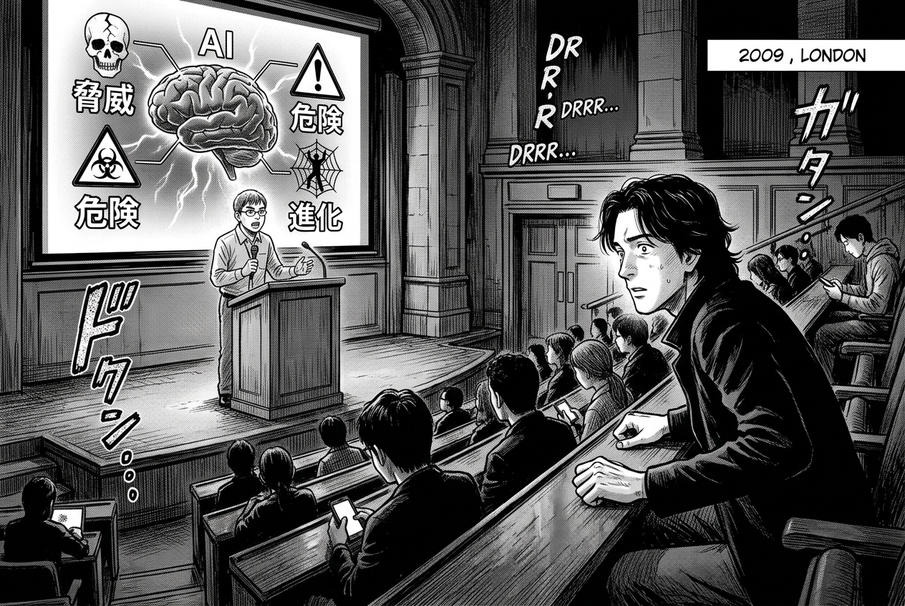
Shane Legg warned that superintelligent computers could develop agendas of their own—
and subjugate or annihilate humans.
In the audience sat Demis Hassabis—
a five-time World Games Champion,
a child prodigy, a neuroscientist.
He leaned forward.
Gripped the armrest.
The two men bonded instantly
over a shared fear: this technology could end everything.
They would found DeepMind together. Safety baked in from before day one.
◆ ◆ ◆
Chapter 01
The First Meeting
SpaceX Headquarters — August 2015
Six years later,
DeepMind had been sold to Google.
To ensure that powerful AI
would not fall under the sole sway
of the parent company's shareholders,
Hassabis and Suleyman convened
the world's first AGI safety board
at SpaceX.
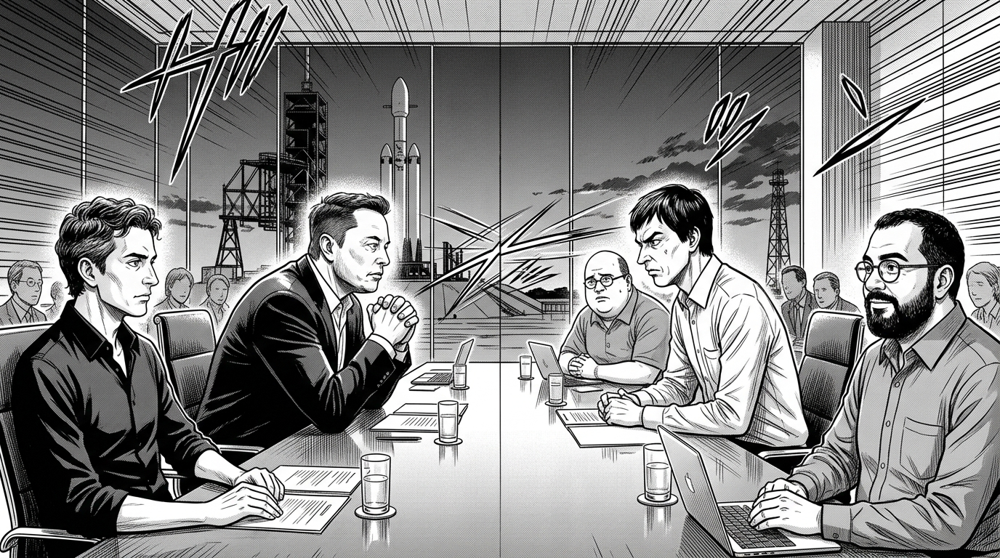
Elon Musk hosted. Google's Larry Page. Reid Hoffman.
All in one room.
The meeting produced no agreements. No conclusions.
Personal tensions—
especially between Musk
and Google CEO Larry Page—
overwhelmed the discussion.
Worse, Musk proceeded to use what he'd learned about DeepMind's progress at the meeting to found OpenAI as a direct rival—an explicitly anti-Google, anti-Hassabis venture.
— The Infinity Machine
With that attempt at oversight stillborn,
Suleyman resolved to create
an alternative arrangement.
He imagined a novel, post-capitalist form of governance:
one that might balance the drastic tensions
when the imperatives of profit,
existential risk, and social justice
demanded a new reconciling mechanism.
◆ ◆ ◆
Chapter 02
Project Mario
London & Mountain View — 2016
Google was restructuring itself,
spinning out specialist operations
under a new holding company
called Alphabet.
Google's M&A chief, Don Harrison,
suggested DeepMind could regain
its independence via this route.
The new DeepMind would have a 3-3-3 board: three DeepMind, three Alphabet, three independent.
DeepMind's leaders,
fond of secretive code names,
dubbed the ensuing governance talks:
Project Mario.
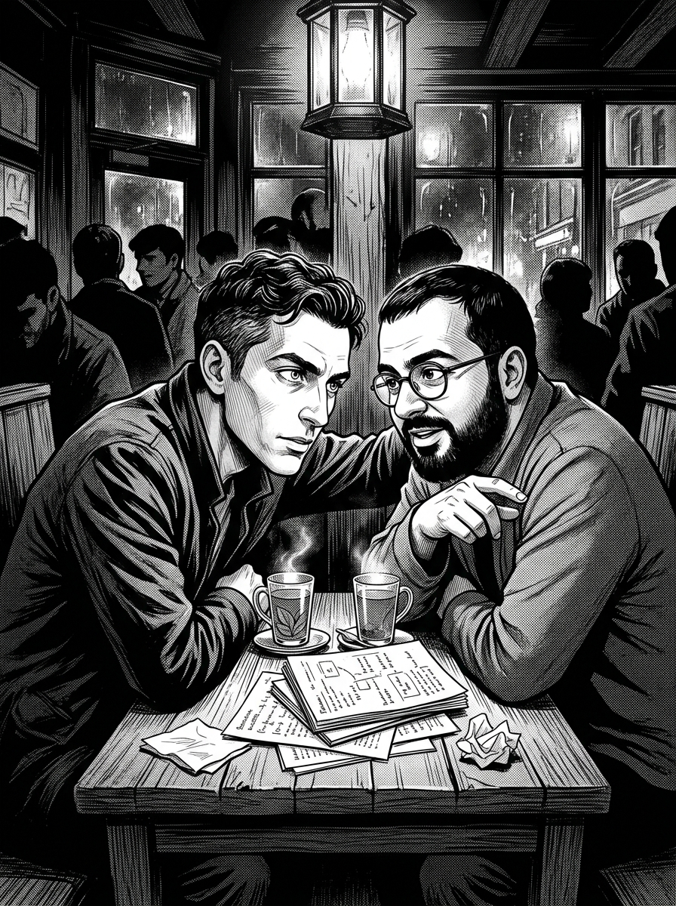
Mint tea. No alcohol. Food ordered at the last moment.
They talked into the evening.
Most Sunday evenings,
Hassabis kept up the old tradition
of meeting Suleyman at a pub.
Two North London boys—
one Greek-Cypriot, one Bangladeshi—
both with immigrant parents,
planning to reshape the future of intelligence itself.
Meanwhile, Hassabis had a secret.
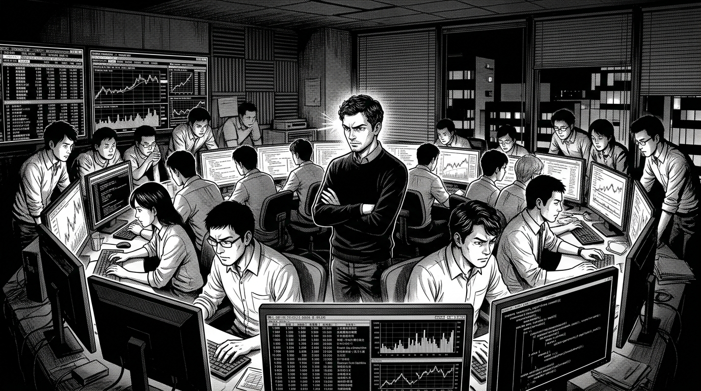
20 researchers. High-frequency trading algorithms. A collaboration with BlackRock explored.
Hassabis wanted to beat Jim Simons, the mathematician who founded the wildly successful algorithmic hedge fund Renaissance Technologies. "Rentec operated in secret, which Demis loved."
— An acquaintance of Hassabis
Did the secret trading team
make money?
No.
Because of Google's wariness,
it was quietly disbanded.
◆ ◆ ◆
Chapter 03
The Bad Cop
London — November 21, 2016
Hassabis met Larry Page
on four occasions.
A formal term sheet was signed.
Then he met the new CEO, Sundar Pichai.
Cordial but bland.
The DeepMinders concluded:
Pichai was not going
to rock the boat.
The following week,
they experienced
a rude awakening.
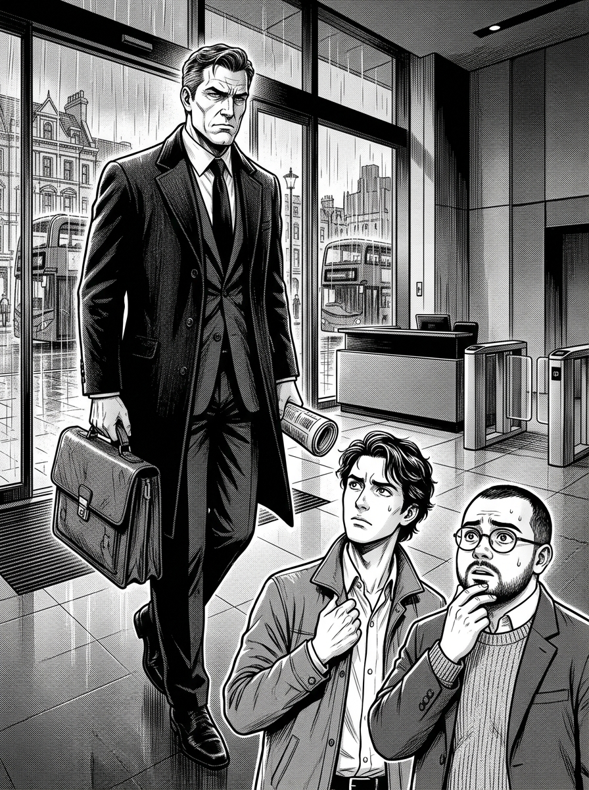
Everyone is in agreement on safety. But regarding the spin-out… there are concerns.
Google's chief legal officer, David Drummond,
showed up in London.
He elaborated on a complex new formula
that was not quite a spin-out
but not quite the status quo, either.
Hassabis and Suleyman were confused.
Four days later,
Pichai revealed the steelier side
of his personality.
AI was destined to become strategically important
to Google's flagship products.
He would not let it go.
◆ ◆ ◆
Chapter 04
Plan B — Five Billion Dollars
Late 2016
Back in 2013,
during the acquisition negotiations,
they had entertained
a rival bid from Facebook.
Now they cooked up
another version of Plan B.
They would gather pledges of $5 billion
from outside investors.
If Google didn't give them
the governance they wanted,
they would walk out of the company.
$5 billion — enough to cover operations for more than five years. OpenAI had claimed $1 billion, and even that was smoke and mirrors.
Suleyman assembled a team:
imaginative lawyers,
a top-flight communications strategist,
a prominent investment banker.
The reconstituted DeepMind would be
a company "limited by guarantee"—
the structure used by nonprofits.
No shares. No dividends.
Its obligation: its principles.
"It was open to Alphabet to just say, well, back in your boxes, boys, we own you, you'll do what we say."
— One of DeepMind's advisers
But the team was ready to assert
that the British public
had an interest in DeepMind
breaking free from Google.
The art was to get Google
to take this negotiation seriously—
without ever saying the words "unless you do this, we will leave."
◆ ◆ ◆
Chapter 05
One Billion Dollars
Asilomar Hotel, California — January 2017
The Asilomar Hotel—
a serene seaside refuge
on California's Monterey Peninsula.
Half a century earlier,
it had hosted a famous conference
on genetic research,
laying the ground rules
for the breakthrough technology
of the 1970s.
Now, following the shock
of Lee Sedol's defeat by AlphaGo,
it was AI's turn.
Hassabis and Suleyman
sat down with Reid Hoffman.
If they broke free from Google,
would he help finance
a new public-interest AI company?
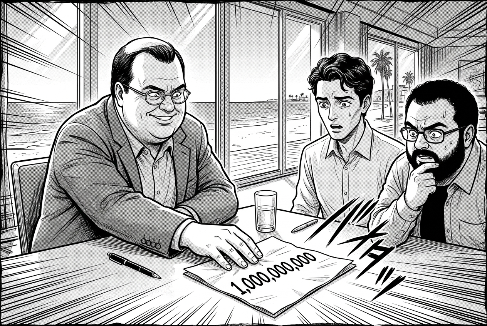
This is the most impactful technology of my lifetime. I support it for the same reasons I support OpenAI. This technology shouldn't entrench a monopoly.
Hoffman committed more than
a quarter of his wealth:
$1 billion.
It was 100 times more
than he had pledged to OpenAI
just over a year earlier.
"I didn't tell Sam about this. I didn't tell Greylock. Billionaires answer to nobody."
— Reid Hoffman
Meanwhile, Suleyman found Kent Walker, Alphabet's top lawyer,
and introduced him to Angela Kane—a senior UN official
who worked on containing
weapons of mass destruction.
He also told Walker
he had sounded out Barack Obama.
He mentioned Al Gore.
For good measure, Suleyman hinted that extremely rich people wanted DeepMind free.
◆ ◆ ◆
Chapter 06
The Vegetarian Curry
Pichai's Home, Silicon Valley — Late January 2017
Hassabis checked in with Larry Page,
also at Asilomar.
Page still supported the spin-out.
But the idea required Sundar Pichai's buy-in.
Hassabis packed his bag,
left the conference early,
and headed to Mountain View.
January 9, 2017.
Hassabis sat down with Pichai
at Google headquarters.
Suleyman dialed in
from his hotel room.
Pichai sounded open to everything.
A few details to iron out.
The next day, Drummond showed up
and announced that Hassabis and Suleyman
had failed to understand Pichai:
he was entirely against Alphabetization.
Good cop, bad cop. Again.
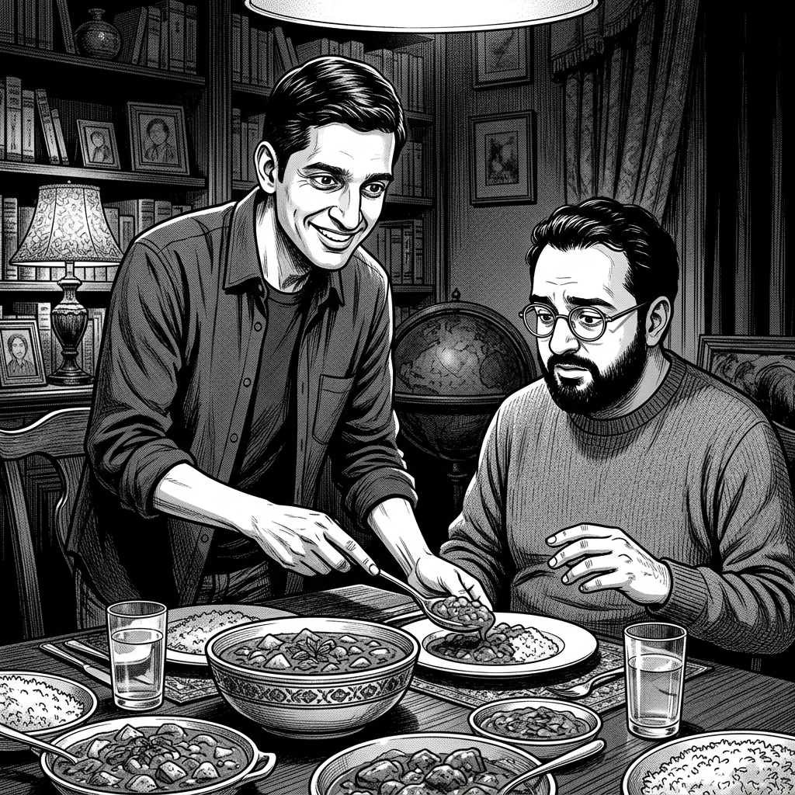
Rather than spinning out all of DeepMind… what if it splits in two?
Pichai served Suleyman a vegetarian curry
and a tasty proposal.
Hassabis could spin out Research.
Suleyman would run
all Google's applied AI
from California.
Who knew if AGI would work,
Pichai remarked— somewhat dismissively.
Perhaps hoping to drive a wedge between them.
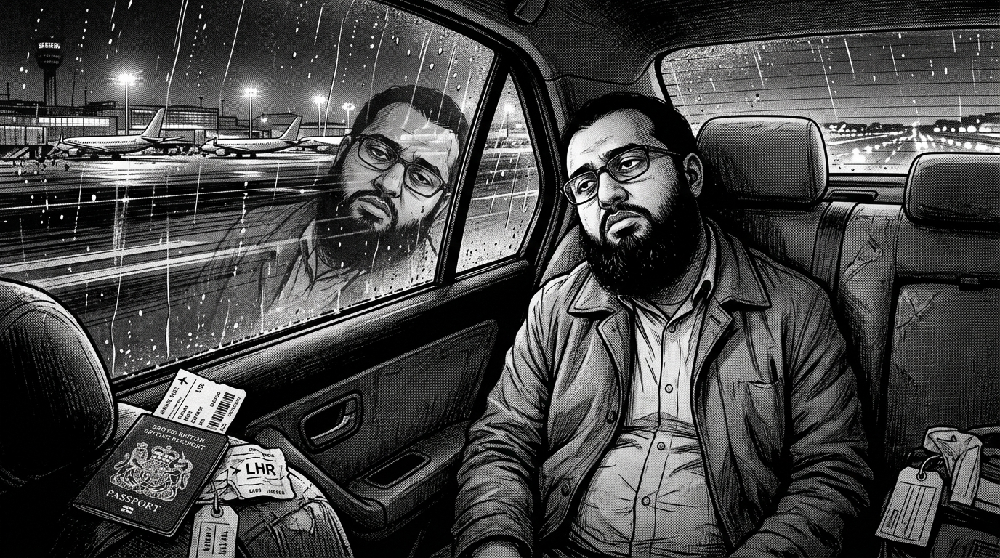
Through the spring of 2017,
the plan made grinding progress.
Every few weeks,
Hassabis and Suleyman made
the 11-hour plane trip
from London to San Francisco
and sat through another
interminable meeting.
Then they would head back
to the airport
to re-scramble their body clocks.
Small wonder that, when the transformer architecture appeared that summer, Hassabis was less alert to its potential than he might have been.
◆ ◆ ◆
Chapter 07
The Enchanted Forest
Scottish Highlands — June 2017
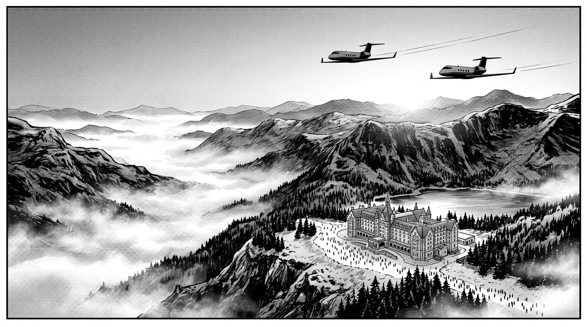
500 employees left London
on two chartered jets,
bound for the Scottish Highlands.
A resort called Aviemore,
not far from the royal castle
of Balmoral.
The vast banquet hall
was decked out with trees and foliage,
like the enchanted forest
of Narnia.
"If you want a lot of accommodation, there's Scotland and there are private islands. Private islands are a bit much, I think."
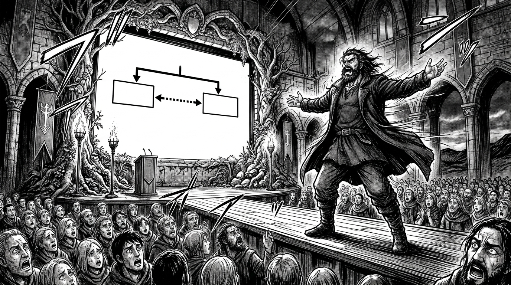
衝撃
Suleyman appeared onstage.
He put up a slide.
"DeepMind: A Global Interest Company."
An org chart with two boxes.
The first: "Alphabet/Google"—
Suleyman and Applied AI
at the heart of the mothership.
The second: "DeepMind"—
an independent Global Interest Company,
connected to Google only by
a dotted line.
Not a spin-out. A spin-in AND a spin-out. People's heads were spinning.
Ten days later.
Google sent back its
latest negotiating position.
Red lines all over it.
Pichai was nowhere near
approving the plan
announced at Aviemore.
That same week,
at OpenAI,
Ilya Sutskever leapt out of his chair.
He had just read the transformer paper.
◆ ◆ ◆
Chapter 08
The Mirror War
OpenAI — 2017 – 2018
Unbeknownst to Hassabis and Suleyman,
a parallel fight
was playing out over OpenAI's future.
It was the mirror image
of the DeepMind conundrum.
DeepMind existed as a for-profit
but wanted nonprofit governance around AI.
OpenAI existed as a nonprofit
but needed capitalist machinery
to raise money.
Both saw salvation
in a capitalist/post-capitalist hybrid.
"You are concerned that Demis could create an AGI dictatorship. So it is a bad idea to create a structure where you could become a dictator if you chose to."
— Ilya Sutskever, email to Elon Musk, September 20, 2017
"Is AGI truly your primary motivation? How does it connect to your political goals?"
— Sutskever to Sam Altman, same email
Musk's response was curt:
"Guys, I've had enough."
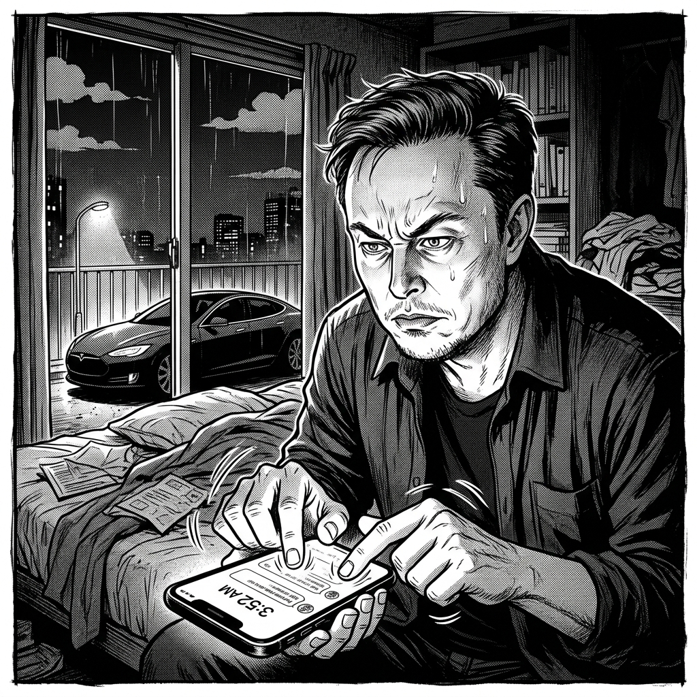
3:52 AM.
OpenAI is on a path of certain failure relative to Google.
"Tesla is the only path that could even hope to hold a candle to Google. Even then, the probability of being a counterweight to Google is small. It just isn't zero."
— Elon Musk, 3:52 AM email, January 2018
He wanted OpenAI
to spin into Tesla.
Altman saw his chance.
This proved Musk's power hunger.
Together with Brockman and Sutskever,
they refused.
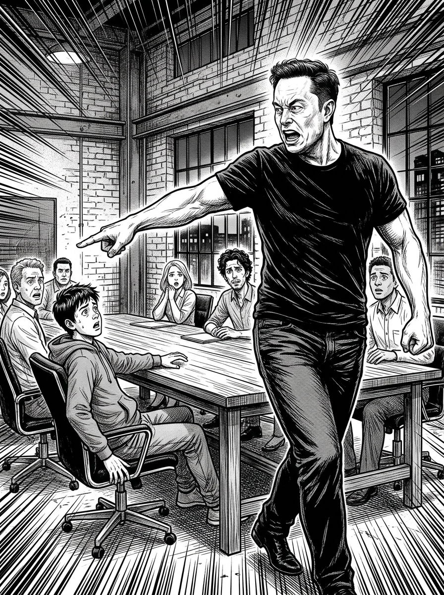
You're a jackass!
At an all-hands meeting,
Musk announced he was quitting.
An intern asked
if speed might be reckless
from a safety perspective.
"Isn't this going back to what
you said you didn't want to do?"
Musk stormed out of the meeting.
He never came back. Altman threw Brockman and Sutskever under the bus, telling Musk's lieutenant their remonstrations had been "childish."
"Our biggest tool is the moral high ground. It doesn't matter who wins if everyone dies."
— Greg Brockman, email to Musk
◆ ◆ ◆
Chapter 09
The Unraveling
2018 – 2019
At the beginning of 2018,
DeepMind's version seemed
to reach resolution.
A thick slide deck
presented to the Alphabet board:
"An unprecedented technology
requires an unprecedented structure."
One slide quoted Vladimir Putin:
"The one who becomes leader in AI
will be the ruler of the world."
Another quoted a NYT columnist:
"Technology has crossed over
to the dark side.
It's coming for you.
It's coming for us all."
Google finally signed
a complex term sheet.
Hassabis was guaranteed $15 billion in funding
over the next decade.
After two years of negotiations,
he had hit his limit.
"I don't want this part of my brain to grow."
— Hassabis, when asked to review another legal document
Then, all of a sudden,
the hope of resolution shattered.
Apple poached a senior Google executive.
Jeff Dean was promoted.
The space in the org chart
that Suleyman would occupy— eliminated.
"I remember being with Moose and he was like, what do I do now? That's when he ended up wearing no clothes. He was up the cloud in a banana."
— A colleague
◆ ◆ ◆
Chapter 10
Coal Drops Yard
King's Cross, London — 2019
Hassabis liked to say that
the worst thing in the world
was to control someone.
But his hatred of domination
ran the other way too:
he was determined
not to be dominated.
And whatever the merits
of the bullying allegations,
there was clearly a faction
within the company
that wanted Suleyman out.
Perhaps this might be
a convenience?
An outside lawyer was retained.
An investigation opened.
The report ran to 25 pages.
Suleyman was summoned
to a review meeting.
If he accepted the complaints,
he could keep his reputation
and a role at DeepMind.
If he disputed them,
he would probably be fired.
And forfeit compensation.
He was given two hours to decide.
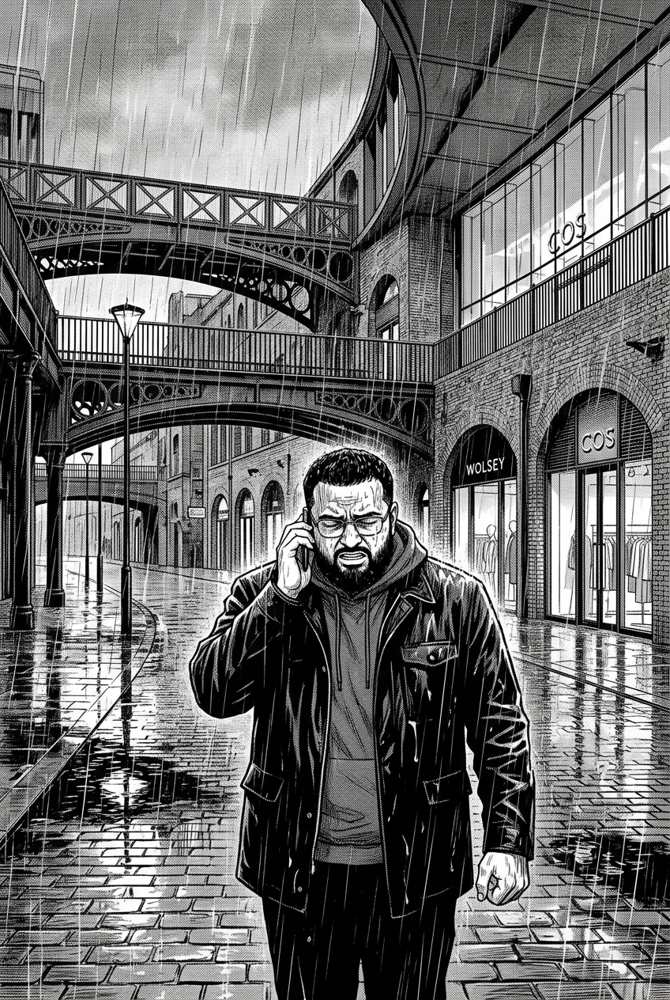
He paced furiously through the rain.
He phoned Marilyn— his girlfriend from when his best friend had been George Hassabis.
Demis's kid brother.
Later, he would wish
he had used that time
to call a lawyer.
Around noon,
he walked back in.
He accepted the charges.
◆ ◆ ◆
Chapter 11
Placed on Leave
Mountain View & a French Beach — August 21, 2019
DeepMind's communications director
was on a French beach.
Her phone rang.
Bloomberg was about to publish.
Well-placed sources were saying
Suleyman had been "placed on leave."
The story would go out
in an hour.
"They couldn't decide whether they had or hadn't placed Mustafa on leave. Nobody said let him burn. There just wasn't a plan, and they were caught with their pants down."
— A DeepMind colleague
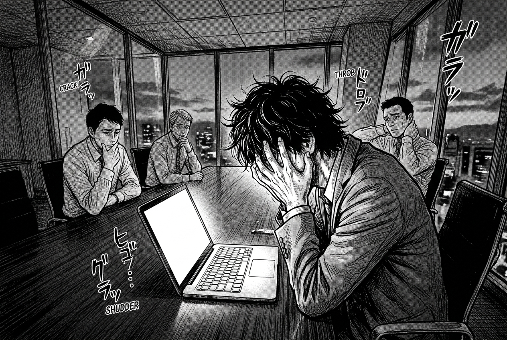
A message popped up on his screen.
He put his face in his hands and walked out.
On the other side of the world,
Suleyman was in a conference room
in Mountain View.
He had thought
accepting the complaints
would protect his reputation.
The Bloomberg headline shredded that implicit contract.
There was no way this could have happened,
he reckoned,
without Hassabis's approval.
The first suspicion was false. But the second one was accurate.
Google made him a Vice President.
He moved to California.
But Suleyman was now a prince without a court.
Despite his grand title,
he was not allowed
to manage others.
◆ ◆ ◆
Chapter 12
Idealist to Realist
2024 – 2025
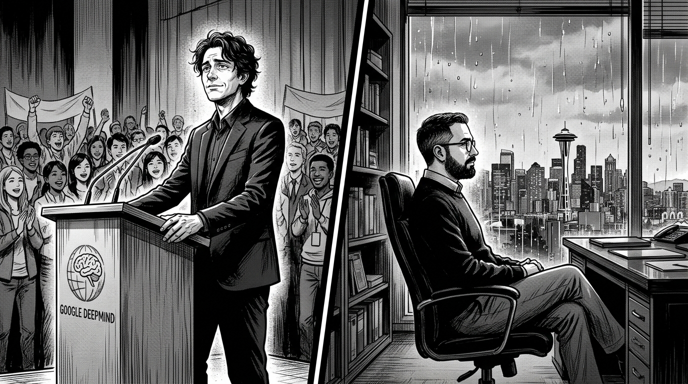
Hassabis became the chief executive
of Google DeepMind—
absorbing Google's AI researchers
in Mountain View,
greatly expanding his army.
Suleyman quit Google,
launched a startup with Reid Hoffman,
then became the chief executive
of Microsoft AI.
Two North Londoners
with immigrant parents
headed AI operations
at two American tech giants.
Although they were now rivals,
with bitter memories of their parting,
they delivered similar verdicts
on Project Mario.
The exercise had been futile.
The negotiations achieved nothing.
They were bound to achieve nothing.
They consumed vast quantities
of energy and goodwill,
making them positively harmful.
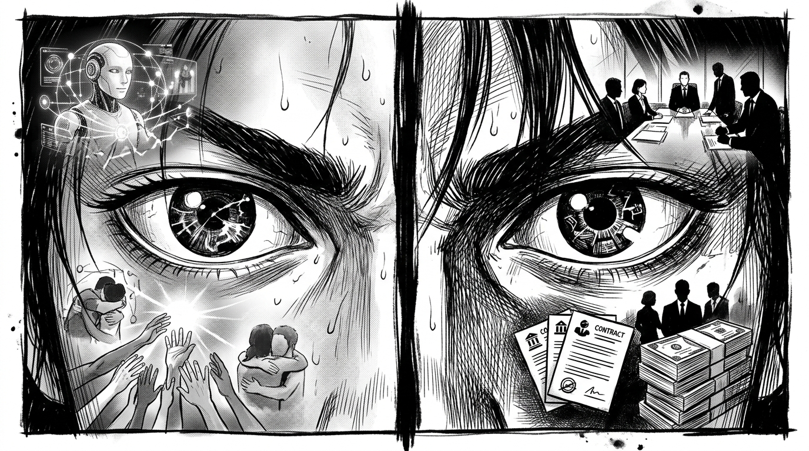
"Safety isn't about governance structures. Even if you have a governance board, it probably wouldn't do the right thing when it came to the crunch."
— Demis Hassabis
"When we were negotiating with Google, we wanted to ensure safety in a way that would be trustless. That's actually very difficult to do in reality. So then I thought, why don't I go the other way? Take the energy that was going into the trustless negotiation and put it into creating real trust."
— Demis Hassabis
"You have to be adaptable. You have to move from idealist to realist, but hopefully still with your values."
— Demis Hassabis
In selling DeepMind to Google,
they had extracted a promise
that their technology would never
be used for weapons or surveillance.
By 2025, Google, like Microsoft,
was eager to supply AI
to the national security complex.
The notion that a well-meaning individual
had a seat at the table
offered a flimsy scaffolding of reassurance
to an alarmed world.
But perhaps it was
the best comfort available.
終
Based on The Infinity Machine
by Sebastian Mallaby